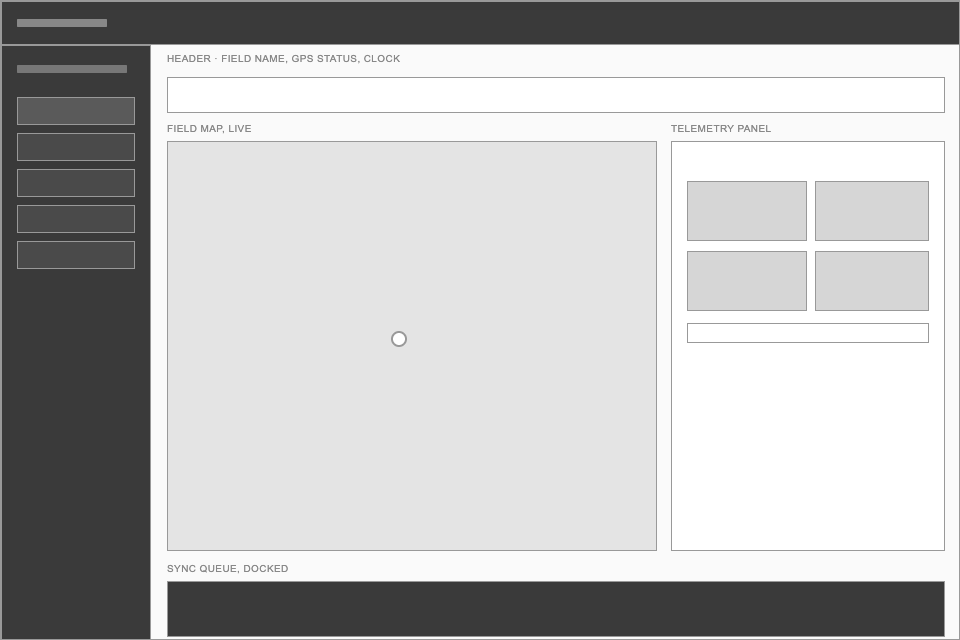
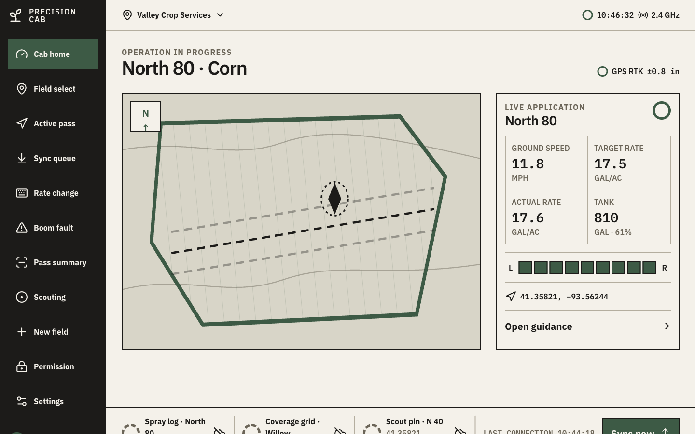
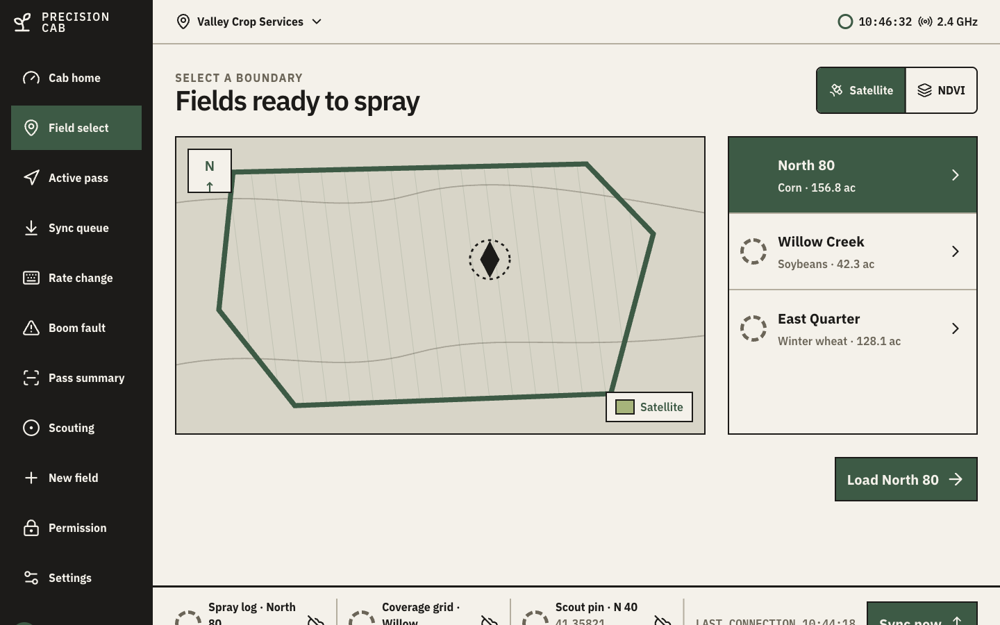
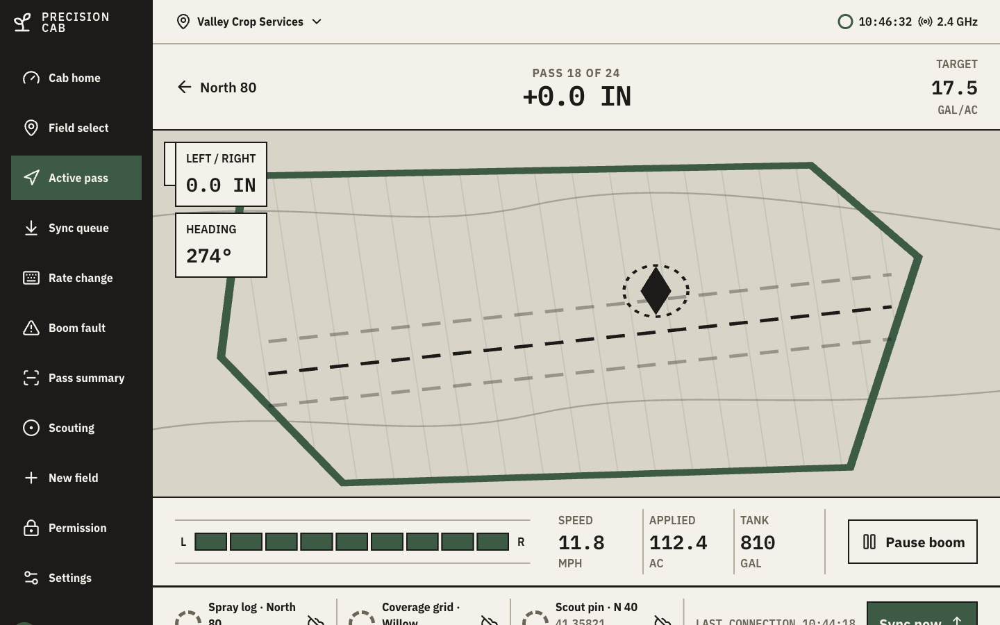
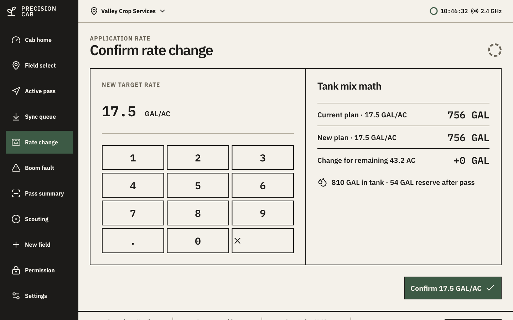
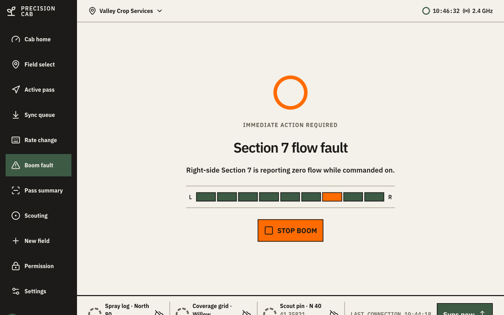
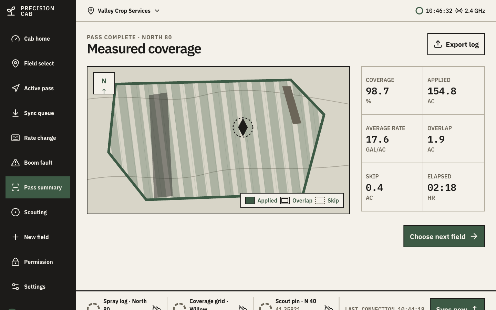
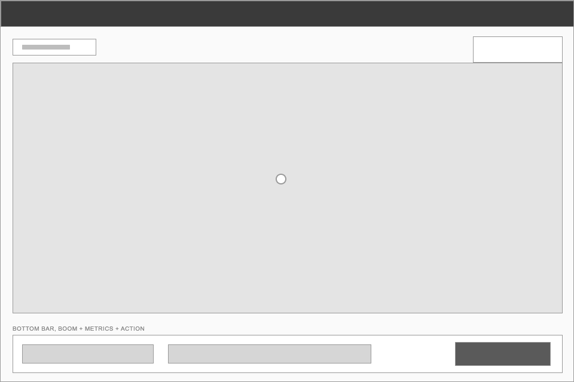
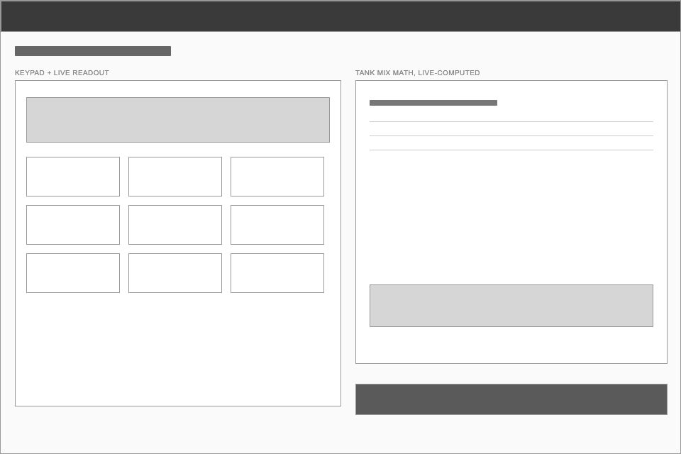
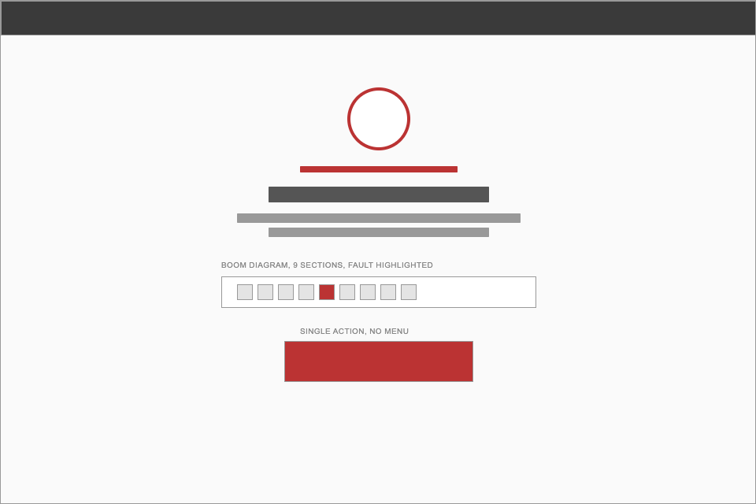

Precision Cab: designing for real operators in real conditions.
Sprayer operators spend 12 to 14 hours behind glass that's vibrating, dusty, and half-obscured by sun glare, wearing gloves, watching GPS, and running tank math by hand, all while rolling through a field worth $156,000. Most in-cab interfaces treat that as a UX nitpick. I treated it as a safety problem.
These aren't usability failures. They're safety failures.
Farm equipment cabins vibrate constantly, fight direct sun glare most of the day, and get operated by gloved hands making split-second calls at 11 mph through six-figure fields. Most agtech interfaces still look like a web app bolted onto a windshield mount: tiny buttons, alerts that need multiple dismissals before you can stop a boom, a map that vanishes behind a menu right when you need it most.
The problem was never a nicer dashboard. It was a console that respects the actual conditions of the job, not the clean demo an OEM shows at a trade show.
Four constraints that weren't negotiable.
I don't have access to an actual cab or an operator panel, so I proxied research with OEM spec sheets, industrial console guidelines, and ag operator forum threads. Four constraints kept showing up no matter which source I pulled from.
64px minimum touch target
Anything smaller is unreliable with gloves on. This wasn't a nice-to-have, it set the floor for every button, row, and control in the system.
No hover, no mouse
Every flow has to work left-thumb first, on a touchscreen mounted at an angle. Hover states are dead weight in a cab.
One accent color, maximum
Color gradients wash out completely in brightfield sun glare. A single accent color, spent only where it matters, was the only thing that stayed legible.
Fixed grids, not fluid ones
A vibrating cab can't rely on layout that reflows or shifts. Structure has to hold, not adapt on the fly.
What operators complained about online wasn't missing features. It was trust: not knowing whether the machine had actually stopped spraying, whether a sync had gone through, or whether a fault was new or already handled. The interface had to answer three questions at all times: where am I, what's happening, and what do I do.
Six decisions the constraints forced.
Every decision below traces back to one of the four constraints above, or to the trust problem operators kept describing.
Warm ink palette, zero decoration
Cream background, ink-black structural borders, green for healthy status, orange strictly for immediate alerts. No drop shadows, no gradients, no glassmorphism. In a sun-glare cab, subtlety kills legibility. Every screen reads like an OEM spec, because that's what builds trust.
Single source of boom truth
The 9-section boom diagram appears on three screens: cab home, active pass, and the boom fault alert. Instead of three separate patterns, I built one BoomDiagram component with two booleans, stopped and fault. A flagged section lights up with identical shape, position, and color everywhere it appears, so the operator never has to relearn a symbol under stress.
Map as context, not content
The field map is inline SVG: satellite view, NDVI toggle, guidance lines, applied/overlap/skip overlays, compass. It sits on every primary screen because the operator's first question is always where. Switching modes doesn't swap components, it swaps a single mode prop and the SVG redraws.
Rate change with live math
Operators adjust rates mid-field, then do the tank math by hand. I built a keypad with live tank-mix math built in: current gallons needed, new gallons needed, the difference, and reserve left in the tank after the pass. The mental math stays inside the tool instead of sending someone to a phone calculator.
Offline is a state, not an error
Rural connectivity drops constantly. The sync queue is a docked banner with an explicit waiting → syncing → synced progression and a last-connection timestamp. It surfaces automatically when connectivity returns, no scheduler or polling required.
Container queries over media queries
I added a device switcher (console / tablet / handheld) so anyone previewing the app can check breakpoints without resizing the browser. The catch: media queries key off viewport width, so shrinking a container wouldn't trigger mobile layout on its own. I scoped the breakpoints to CSS container queries instead, so the switcher and an actual resized window trigger identical layouts.
From "show everything" to "show what matters, permanently."
The first concept looked like most telemetry dashboards: multiple panels, expandable cards, information you'd click into.
Discoverable information doesn't work under stress
Once I sat with the operator constraints, that first concept fell apart fast. Expandable cards assume someone has a free hand and a moment to explore. A cab operator has neither. The map can't hide behind a tab. Boom status can't require a tap to check. The sync queue can't be a modal that interrupts the one thing the operator is actually doing, which is driving a straight line through a field.
So the design shifted from showing everything to showing what matters, always. The field map is inline on every primary screen. The boom status is always in view. The sync queue is docked at the bottom, visible but never blocking. Nothing the operator needs to trust the machine is more than a glance away.
11 screens across one operator flow.
Grouped the way an operator actually moves through a pass: get set up, run the pass, close it out, and handle whatever the system needs in the background.
Pre-flight
Cab home: live telemetry plus an expandable bottom sheet on handheld, GPS status, boom health, field map.
Field select: satellite / NDVI toggle, field list with status rings, load action.
Empty state: no boundary loaded, explicit draw-or-import instruction.
Permission denied: unauthorized field boundary, with a back action.
Active operation
Active pass: pass counter, heading, left/right offset, speed, applied acres, tank level.
Rate change: 12-key keypad with live gallon math and tank reserve.
Boom fault alert: full-screen, single action, STOP or RESUME.
Post-pass
Pass summary: coverage percentage, applied acres, overlap/skip breakdown, export action.
Scouting capture: camera frame with GPS chip, shutter, voice-note toggle.
System states
Offline sync queue: waiting/syncing/synced progression, manual sync button.
Settings: glove-mode toggle, night-dim slider, operator profile readout.
From lo-fi to final, cab home.
I didn't sketch this project in Figma first. I built straight into the constraints in code, so these lo-fi passes are the structure stripped back down, not a phase I actually shipped through. Cab home carries the most weight of any screen, since it's the one the operator sees the moment they start a pass.

Map on the left, telemetry on the right, sync queue docked at the bottom. That three-zone split held from the first pass and never changed, because it's the only layout where all three trust questions stay visible at once.

The ink-and-cream visual system went on top: structural borders, mono telemetry type, the boom diagram. The zones stayed exactly where the wireframe put them.
Six screens from the working prototype.
Every screen below is a real screenshot of running code, not a static mockup. The full 11-screen flow is in the repo.





"The best console interface isn't the one that impresses a designer. It's the one the operator trusts when things go wrong."
Design principle · Precision Cab
Verified, not assumed.
These are facts I checked against the running code, not a self-reported summary.
BoomDiagram component governs 3 screens, zero duplicated logicWhat I'd do differently.
I went in expecting to invent a restrained industrial look. What actually happened: aviation cockpits, audio racks, and surgical displays had already solved this class of problem, high-contrast borders, one status-color system, oversized hit targets. The best move here wasn't invention. It was recognition.
The color constraint was the hardest call. I wanted more visual hierarchy: subtle panel backgrounds, section dividers. Holding an iPad next to a sprayer-cab photo at noon killed that idea fast, anything under 4:1 contrast washed out completely. The four-color system wasn't a lazy default. It was the only one that survived actual sunlight.
I built this on proxy research: spec sheets and forum threads, not a single actual operator. It got the constraints right, but forum complaints tell you what people are frustrated by, not what they'd trust. If I keep going, the next step is a short ride-along with a commercial applicator and paper-prototype testing in the actual seat.
The sync queue and telemetry are simulated in memory, not wired to real GPS hardware or persistent storage. That was the right scope for four weeks, but it's the first thing that would need to change before this could run in an actual cab.
Precision Cab is a concept project exploring industrial design systems: constraint-first design, component-level thinking, interface architecture. It isn't a commercial product, and it hasn't been used by a real operator yet.
Full process archive (constraint notes and lo-fi wireframes)
Four screens that carried the most structural risk.
I worked through the four screens most likely to break under the cab constraints before touching any of the other seven. Each one answered a specific layout question before I trusted the pattern anywhere else.
Cab home
Could a three-zone layout, map, telemetry, sync queue, actually fit at 64px touch targets without feeling cramped on a handheld? This screen set the grid every other screen inherited.
Active pass
The guidance overlay had a hardcoded pixel offset that only lined up by coincidence on desktop. Getting this screen right meant fixing that coupling, not just resizing boxes.
Rate change
Could an operator do tank math on a keypad without a second screen or a mental detour to a calculator? This screen tested whether "respect the constraint" could also mean "save the operator a step."
Boom fault
The single highest-stakes screen in the app. One glance, one action, no ambiguity about whether the boom had actually stopped. Everything about the visual system got pressure-tested here first.
Structure first, visual system after.
These are lo-fi passes on the four highest-risk screens, stripped back to boxes and labels so the layout logic is visible on its own, separate from the ink-and-cream visual system on top of it.


